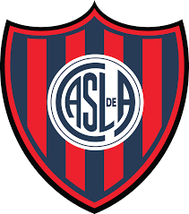

Escudo de San Lorenzo

Títulos de San Lorenzo
San Lorenzo de Almagro obtuvo 22 títulos, en el medio local 15 son campeonatos de Primera División, 2 copas nacionales y en el medio internacional ha alzado 5 títulos donde 3 son en el ámbito confederativo e interconfederativo (CONMEBOL/FIFA) y 2 en el ámbito rioplatense (AFA/AUF). Es el quinto equipo más ganador del profesionalismo (17 títulos). A lo largo de su historia de entre tantos títulos San Lorenzo fue campeón de la Supercopa Argentina, fue el primer campeón de la Copa Sudamericana, el único equipo argentino en haber ganado la Copa Mercosur, además de ganar la Copa Libertadores de América y ser subcampeón del Mundial de Clubes ese mismo año, lo que lo hace ser uno de los 4 clubes argentinos que disputaron la final de un torneo internacional organizado por la FIFA.